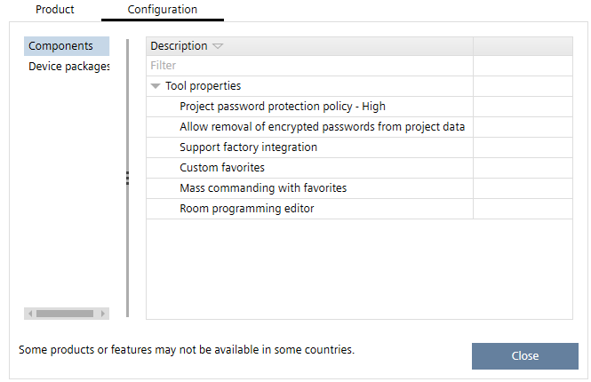
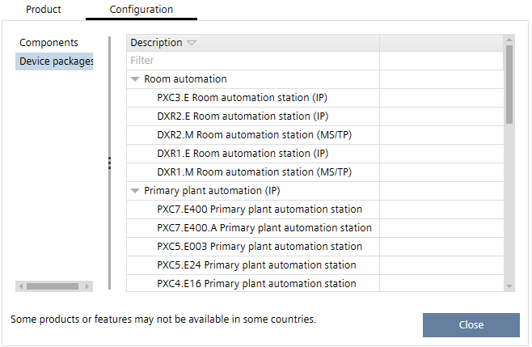

Help > About
Select Help > About to display information on the version and the configuration of your ABT Site installation.
The Product tab contains the ABT Site version, copyright information, and the license type.
The Configuration tab contains 2 sections. The entries Project password protection policy and Allow removal of encrypted passwords from project data are valid for the entire project. The further information below is only valid for the room applications.
- The Components section contains a list of special features which are set by your local tool manager.

- The Device packages section contains a list of available devices. The available features are subject to the devices, which are made available for you by your local tool manager.
